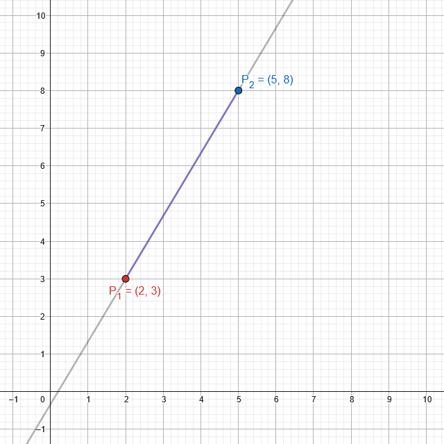

Bresenham Line Drawing
July 13, 2026
For some reason decided to do the whole change in one commit
Intro
I decided to take a little detour during this project to try out a line drawing exercise.
I saw this video by this guy that went over fundamental graphics math in a very simple way. Basically he just went over the projection equation but used that and a line drawing API to create wireframes of spinning cubes by connecting vertices with lines.
I thought it was interesting, so I wanted to try the same thing to drill down how the math works in my head and how it gets put into code. But the only problem was that I was doing all this from scratch and had no easy way to rasterize lines connected by two points.
My initial thoughts were to create a sorta complicated algorithm that would iterate from one point to another and check the slope at each step and use that to dictace what kind of character to draw ( \, /, |, etc... ). Eventually I just gave up and decided to look at what the common solution/method was for drawing lines which led me right to the Bresenham Line Drawing Algorithm.
So I had an initial alright guess on the algorithm after looking at the solution. But turns out it is much more simple than I had first thought.
Discussing Lines
We can start with the concept of lines. We can define a line segment as a line that has two endpoints: and . We can also define a non-terminating line using two points which describes its direction/slope. I start with line segments because it helps describe the slope better and also helps represent vertices and edges.
For example, we can create a line on a cartesian 2D coordinate system using the points and . We order them as and to decide which direction (up or down the slope) we want to read the line and also helps with equations.

The slope defines the angle of the line and can be calculated as rise over run (if you remember from grade school). Rise is the vertical distance (up and down) of the line from to and run is the horizontal distance (left to right) between those same points.
So mathematically we can define the slope as
Using the line segments from our previous example we can get the line's slope to be:
Another useful property of the slope is that it describes the ratio of vertical change (∆y) by the horizontal change (∆x). This means that for every single unit we move in the x axis along the line, the y value changes by m. So if we were at and change x by 1, then y would change by and the new point on the line would be . (This topic becomes important for the algorithm).
The Algorithm
TODO: add Previous line here
Now let's utilize the previous example of points ( and ) to derive the algorithm to trace a line and rasterize it, fill it in the buffer, and render it to the viewport.
Luckily for this algorithm (like many others such as raytracing), we do not need knowledge of the resolution of the canvas to draw the line. We can start by trying to traverse pixels starting from one point to another. Beginning with the coordinates: , we can calculate the slope (1.6... from the previous section) and start traversing, using pixels as our units.
First, color the current pixel then, move one unit to the right. Since slope is a ratio of change in x and change y, we can move up units (). But pixels are whole numbers so we round (4.6... → 5), making our new coordinates . We just continue this method until our current x position reaches the x value of .
The code looks something like:
function drawLine():
p1 = (2, 3)
p2 = (5, 8)
x = p1.x, y = p1.y
m = (p2.y - p1.y)/(p2.x - p1.x)
while (x <= p2.x):
colorPixel(x, round(y)) // pretend this is a function that colors the current pixel
y += m
x++
Well that was pretty simple considering all of that build up lol.
Now there are a few things to point out right now:
- This only works for lines going left to right. If we wanted to draw a line starting from going to , then the loop would not work.
- This will not work with super steep lines or lines that go straight up. If we try to run this code we will see skipping on steep lines and for straight up or down lines will not be drawn at all (due to loop).
- We are doing some floating point arithmetic here which doesn't translate super cleanly with discrete pixel coordinates and forces us to utilize a rounding function.
Let's go one by one with this.
Swapping Lines
Now if p1.x happens to be greater than p2.x, the for loop will just not run. We could create a second loop that occurs
while p1.x >= p2.x, but that is just extra code, duplication, and complexity.
A simpler solution is that if the first point is to the right of the second, we can just swap them so that way we can traverse left to right. In the end, swapping doesn't change anything since the line looks the same either way.
function drawLine():
p1 = (2, 3)
p2 = (5, 8)
x = p1.x, y = p1.y
m = (p2.y - p1.y)/(p2.x - p1.x)
// Swap starting and end points when start is to the right of end point
if (p1.x > p2.x):
temp = p1
p1 = p2
p2 = temp
while (x <= p2.x):
colorPixel(x, round(y)) // pretend this is a function that colors the current pixel
y += m
x++
Now it works both left to right and right to left lines which covers a bunch of directions. Let's now tackle the steep/straight up line problem.
Steeeeep Lines
Now this is the one that stumped me for the longest time because I wasn't able to easily find a solution for this or derive one myself. Basically I was following the math and trying to derive the code myself, so this was my biggest blocker.
Luckily I found the answer in the Tiny Renderer[1] lecture/explanation. (I'm gonna get a little heavy on writing in the next this section).
The author mentions how we can identify and draw steep lines using the slope. Basically, as stated prevously, the slope defines how many units vertically the line changes when we traverse the line by 1 unit. If the slope is greater than 0, then the y value will increase when x increases (and obviously decrease if the slope is less than 0).
The y value will slowly increase if the slope value is small (like 0.5), causing a very gradual and slow increase in the height of the line. If the slope is large though (like 2), then y value increases in a large way which leads to steeper and steeper lines.
If slope is equal to 1, then the y value increases at the same rate as the x value (1 unit to the right means 1 unit up). But if the slope is greater than 1, then we know that the height is increasing greater than we are moving horizontally (which is the same for lines straight up).
We can use this fact to define that a line starts to become too steep when the slope is greater than 1.
Now this gives us our condition for if a line is steep. Now we could just check in the code if the slope is greater than 1
(slope > 1), but utilizing this approach will give us a head start in using integer arithmetic and not dealing with floating point numbers.
One thing to note is this condition works if , aka if the line is left-to-right. In the code we can either swap the points first then perform calculate the condition, or we can calculate the condition but using the absolute values instead. Either one works, but I will show the absolute value verion just cuzzzzzzzz.
Now that we know how to check when the slope is too steep, what do we do to accomodate for this and properly draw those lines.
We can utilize transposing to achieve our goal. Basically we will treat the up and down directions as left and right, which will allow the algorithm to traverse a straight up or steep line as if it was just a normal line going left-to-right.
Therefore we can swap the x and y coordinates when the line is steep (transposing), and then traverse the line with the swapped coordinates. We will have to make sure that we swap the coordinates before we draw in a specific pixel (transposing back to regular coordinates).
function drawLine():
p1 = (2, 3)
p2 = (5, 8)
x = p1.x, y = p1.y
m = (p2.y - p1.y)/(p2.x - p1.x)
isSteep = abs(p2.y - p1.y) > abs(p2.x - p1.x)
// Transpose x and y coordinates of points if line is steep
if (isSteep) {
tempP2X = p2.x
tempP1X = p1.x
p2.x = p2.y
p1.x = p1.y
p2.y = tempP2X
p1.y = tempP1X
}
// Swap starting and end points when start is to the right of end point
if (p1.x > p2.x):
temp = p1
p1 = p2
p2 = temp
while (x <= p2.x):
if (isSteep):
// Instead of performing operations to transpose the coordinate back,
// We can just color the pixel with the coordinates swapped (in place transpose)
colorPixel(round(y), x)
else:
colorPixel(x, round(y)) // pretend this is a function that colors the current pixel
y += m
x++
Awesome, that was the long part out of the way. With that solved and handled for, we can move onto our last concern.
Utilizing Integer Arithmetic
Calculating with floating point numbers isn't exactly the biggest performance overhead that it used to be on older systems [1]. Although, you can be sure of this by performing peformance tests yourself.
One reason that switching to integer arithmetic is nicer is because it allows for more direct and discrete calculation (floating point arithmetic 💀). It also works nicely with pixels since they are discrete intervals and we can predict values during calculation more concretely.
There are two floating point numbers here: y and m. Changing these variables to integers will affect how we perform our y value updates, so it is not as simple as just changing data types.
We can start by looking at how we are evaluating whether to increase y or not. At the moment it is very simple, just add the slope to y and round.
Let's look into that further. When we round, y is either increasing or it is not by the nature of rounding. For example, if y is 0.2 and the slope is 0.4 and we add the slope to y, then y becomes 0.6 which rounds up to 1. But if the slope was 0.2, then the new y would be 0.4 which would round down to 0.
In the second example where we round down, the y value does not change until the next step where we add 0.2 again which brings y to 0.6 which ends up rounding up. Therefore we only increase the y value if the sum of y and the slope exceeds a certain threshold which we can define as the halfway value of the pixel. So if is the current pixel and is the next pixel up, then the threshold is .
Now the problem is that y is not a whole number or fixed to a pixel coordinate. Although, we can reinterpret it as the y pixel coordinate and a floating point value added to it. From our previous example, if then it is really because the pixel we are on is at . We can call this extra floating point value the error (e for short). Here is how we can expand our current condition for increasing y with our new definitions:
At the end of the expansion, we were able to remove the variable from the condition as in reality this is what we want to be checking. In english, this is checking if the error we are accumulating with the slope surpasses the midpoint of the pixel, in which case we can increase y by 1. In the code we will have to keep track of the error as a separate variable and use that for accumulation instead of y. This is what it looks like:
function drawLine():
p1 = (2, 3)
p2 = (5, 8)
x = p1.x, y = p1.y
// y becomes an integer and error takes its place as the floating point number
error = 0.0
m = (p2.y - p1.y)/(p2.x - p1.x)
isSteep = abs(p2.y - p1.y) > abs(p2.x - p1.x)
// Transpose x and y coordinates of points if line is steep
if (isSteep) {
tempP2X = p2.x
tempP1X = p1.x
p2.x = p2.y
p1.x = p1.y
p2.y = tempP2X
p1.y = tempP1X
}
// Swap starting and end points when start is to the right of end point
if (p1.x > p2.x):
temp = p1
p1 = p2
p2 = temp
while (x <= p2.x):
if (isSteep):
// Instead of performing operations to transpose the coordinate back,
// We can just color the pixel with the coordinates swapped (in place transpose)
colorPixel(round(y), x)
else:
colorPixel(x, round(y)) // pretend this is a function that colors the current pixel
// Error accumulates by slope at every step
// If it surpasses 0.5, we increase the y value and decrease error to compensate
if (error + m > 0.5):
y++
error -= 1
error = error + m
x++
A few things to note. Firstly, y is now an integer since we are accumulating error as a floating point number. Secondly, we are accumulating error like we have before but
when it surpasses the threshold (0.5), then we subtract by 1. This is because we just increased the
value by 1 so we need to renormalize to stay between
and .
The last note, is that we can refactor the code a little bit. Specifically the error + m part to be more like this:
...
else:
colorPixel(x, round(y)) // pretend this is a function that colors the current pixel
// Accumulate error and compare using updated value
error += m
if (error > 0.5):
y++
error -= 1
x++
Anywaysssss. We are still here dealing with floating point values because of the slope and how we accumulate the error variable.
We can actually further break this apart and turn it into integer form using some simple arithmetic and the definition of slope:
Something something, it is almost there idk, im tired...
TODO: finish, add pictures, add styling for hover over code ?